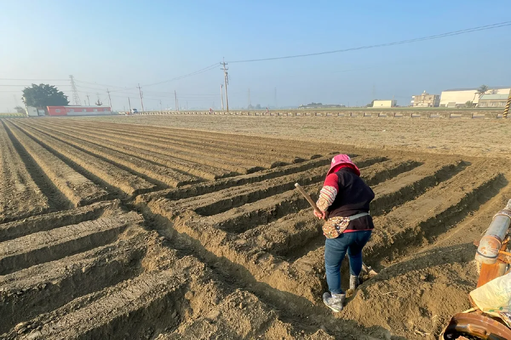
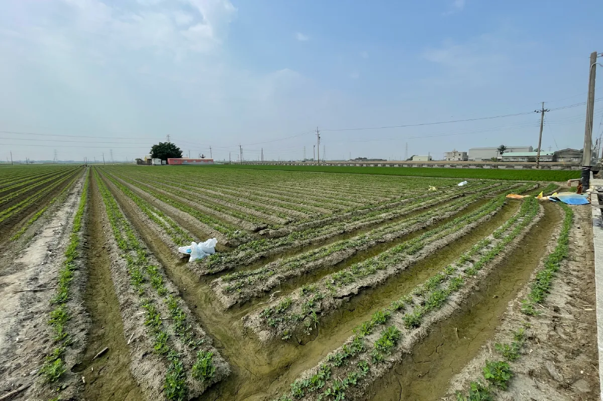
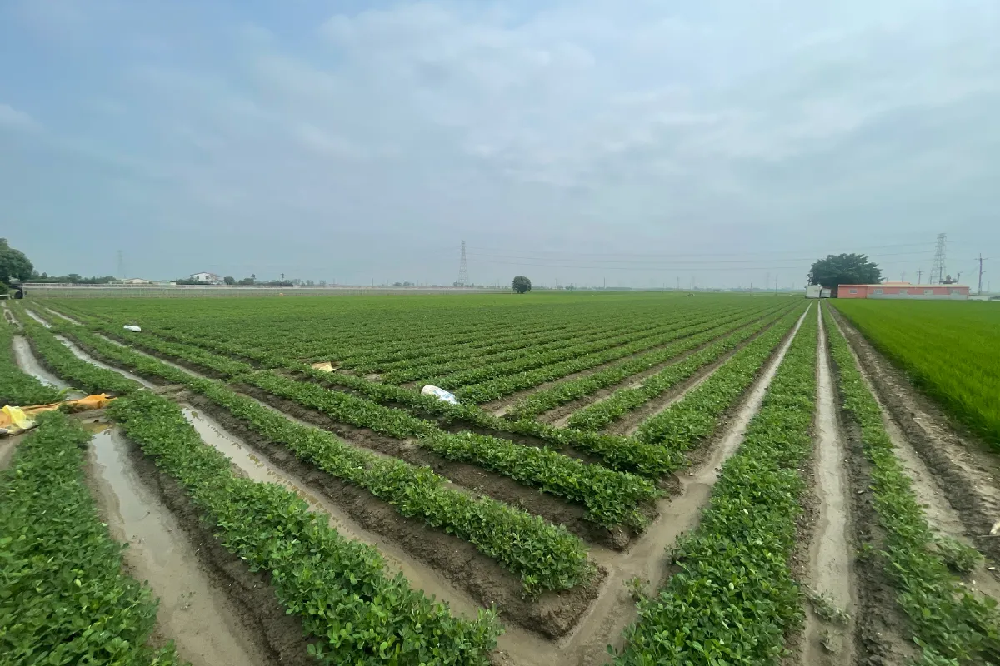
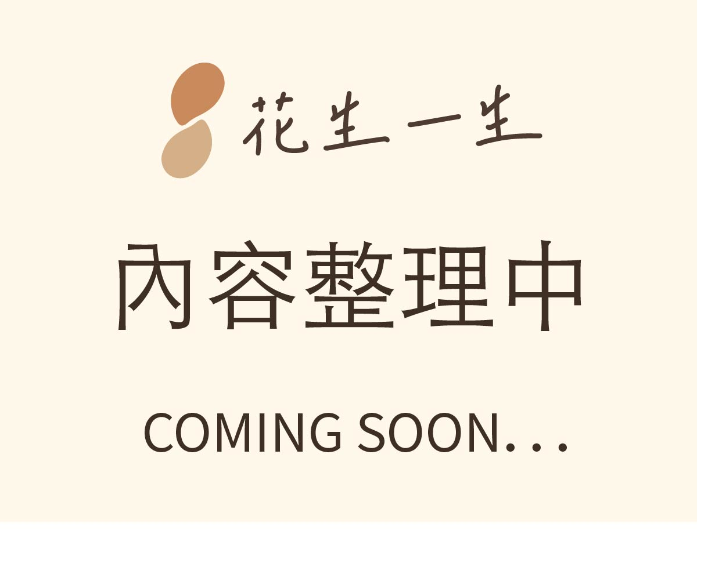
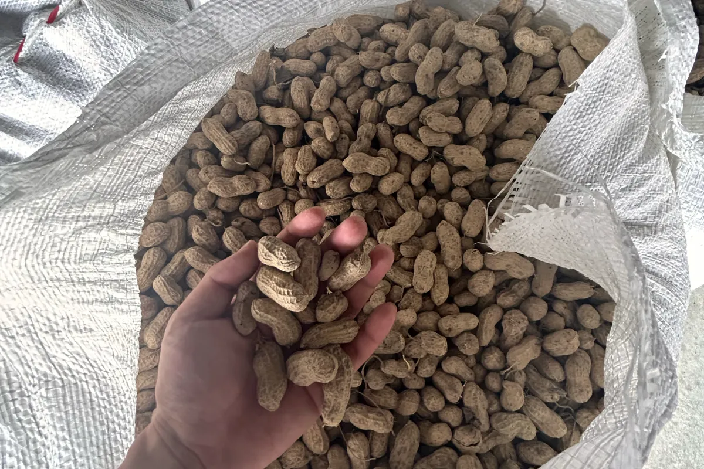

01

SEEDING
播種
花生的一生從土壤開始。選擇合適的田地、時節與種子，是後續品質的第一步。
花生的一生
從雲林元長的土地開始，經過每一個用心的步驟， 讓一顆花生慢慢成為可以安心分享的日常美味。
從農田到餐桌
花生不是突然出現在包裝裡的商品。它從土壤開始，經過種植、採收、乾燥、篩選、烘焙與包裝， 才慢慢成為可以被分享的日常風味。

花生的一生從土壤開始。選擇合適的田地、時節與種子，是後續品質的第一步。

從發芽到生長，田間管理需要留意水分、雜草與植株狀態，讓花生穩定成長。

花生開花後，子房柄會向下伸入土中，果莢逐漸在土裡形成，這也是花生很特別的生命階段。

採收時機會影響花生的成熟度與風味表現。太早或太晚，都可能影響最後的品質。

採收後的乾燥是保存的重要關鍵。降低水分，能讓花生更穩定，也減少受潮與保存風險。
透過篩選，去除不完整、受損或狀態不佳的花生，留下更適合製作產品的原料。
烘焙讓花生香氣被打開，包裝則是為了保留風味，讓花生以更好的狀態抵達餐桌。
我們的理念
我們希望把花生從「日常零食」重新整理成值得被理解、被挑選、被分享的風味。 從農田到餐桌，每一個環節都不是多餘的過程，而是讓花生成為產品之前的重要累積。
認識花生產品